Free to forkNo licence and no copyright claim: build this game under your own name, or lift one idea from it. Why?
Game overview
Guest List Zero is a top-down stealth puzzle game about clearing out an entire party, one guest at a time, without anybody seeing you do it.
Every venue belongs to a criminal crew, and tonight the whole crew is inside: dancing, drinking, dozing on the sofas, guarding the stairs. You walk in with two weapons and two stacks of tools, read the routines, and work through the guest list unseen. Anyone who sees something runs for a phone, and the police don't give up easily.
It grows out of Party Hard by Pinokl Games, a cathartic stealth puzzle about crashing parties, and leans toward the proactive social stealth of the Hitman series. Every venue is generated: a building of several floors on a 16-pixel grid, with walls that break and floors that can fall in, so no two parties are alike. The tiny sprites keep the violence as cartoony and vague as it was in the original.
Target audience
Players who love a stealth game where the whole level is the puzzle: Party Hard, Hitman's crowds and disguises, the planning half of Hotline Miami.
Also anyone who wants to let off steam after a long day, safely, with something that needs thought rather than reflexes. They're tired of hand-made levels that run out, and of stealth games where half the time is spent waiting for a patrol to turn around.
Keyboard and mouse, seen from above. The pace is yours: nobody hunts you until somebody calls.
Game's purpose
Relief and play: a cartoonish, slightly absurd outlet for frustration, with bears and UFOs wandering into the party.
Challenge and mastery: the puzzle of emptying a whole building without a single witness getting to a phone.
Freedom and choice: any order, any tool, any route, even through a wall.
It avoids draining rest (portable tools replace most of the waiting) and safety (16-pixel violence, and the guest lists are crews, not passers-by).
Core concept
Party Hard's stages were drawn by hand, its props could only face one way, and its characters were fixed. Its fun ended when the levels did.
Here everything is a standard 16-pixel piece, so venues are generated: themed, layered, breakable and never the same twice. A campaign is three to twelve parties, sized to your evening, and each one you finish becomes a pin on a world map.
Nothing is unlocked along the way. Every weapon, tool and theme is in the pool from the first party.
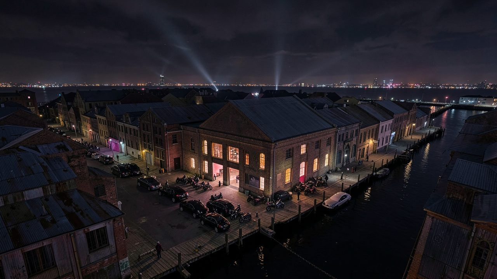
"Every crew throws a party sooner or later. It's the one night the whole crew is under one roof."
Lore and story
The crews
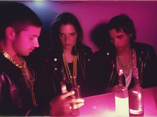
In cities all over the world, crews run the night: protection rackets, loan sharks, smuggling rings, biker gangs. They aren't a nationality, a culture or a side in anyone's politics. They're people who have made greed and intimidation their trade, and everyone around them pays for it.
And they love a party. Each crew celebrates in a venue it owns: a nightclub, a biker clubhouse, a mansion costume party, a beach house, a warehouse rave. The bouncers, the bartenders and the cleaners are the crew's own people. For one night, everybody on the payroll is in the same building.
The uninvited guest
You're a covert operative who takes the job nobody else can: clear a crew's whole party in one night, quietly. Your look is your own, any outfit in any colours. To the crowd you're one more guest, until people start going missing.
The job right now
A campaign is a string of parties, three to twelve of them, one region at a time. Work through each guest list without being seen, and walk out of the exit before the police catch up. When the last party of the campaign is over, a pin goes in the map.
Controls and interface
You control one operative from above. Everything in a venue sits on a grid of 16-pixel tiles, but people move freely across it, never hopping from square to square.
Move
W A S D
Walk in any direction
Shift
Run, on a stamina meter that recharges
Hold Q
Dance (see below)
Weapons
Mouse
Aim
Left click
Use weapon one
Right click
Use weapon two
Items and interaction
E
Interact: pick up, carry a body, work a trap or its trigger
F
Use the selected item
R
Cycle to the next item (up to four carried)
Drop
Shift + left
Drop weapon one
Shift + right
Drop weapon two
Shift + E
Drop the selected item
Dancing is a gamble. Keep it up for three to five seconds and the people around you react, each in their own way: some gather round to dance with you, some leave the room in annoyance, and once in a while someone punches you in the face (a short knockout, no damage). It can clear a room or fill one.
Everyone's state shows over their head, so a busy room reads at a glance: a phone over a guest on their way to call the police, a siren over a body someone has found, drifting light-blue pixels over a sleeper, spinning yellow ones over someone knocked out.
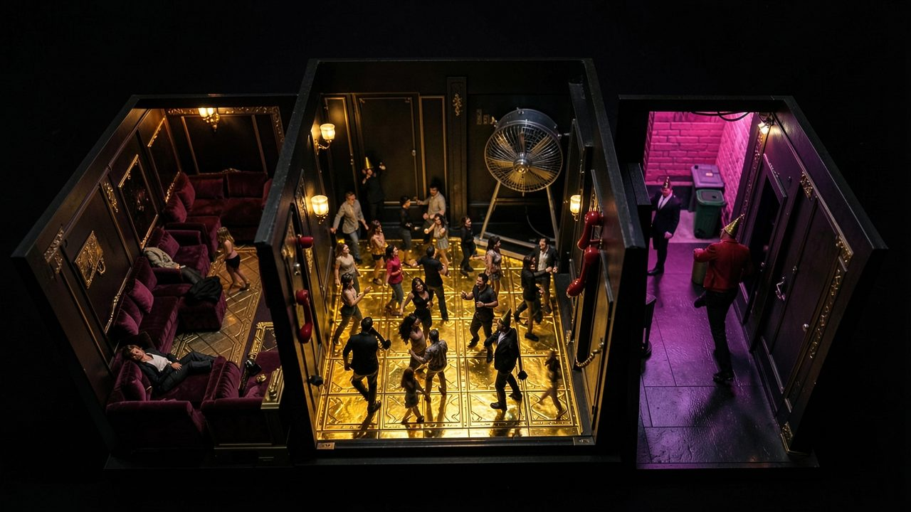
"Every guest follows a routine of their own: dance here, face the wall there for ten seconds, sleep for thirty on a free sofa."
Game layers
01 · Moment-to-moment
One party, one guest list
A generated venue: a building of one or more floors on its own patch of ground, full of guests going about their night. You find the gaps: the dancer who drifts to the bathroom, the guard who turns to face the wall for ten seconds, the sleeper in the back room.
You take guests out where nobody's looking, hide what you leave behind, set up traps and lures, and slip away when someone gets suspicious. The party is over when the guest list reads zero and you walk out of the exit.
02 · Low metagame
A campaign of parties
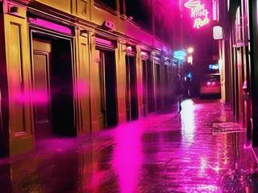
A linear string of parties, as many as you want tonight: 3, 6, 9 or 12. The first is usually quieter and sparser, the middle ones swing randomly between calm and busy, and the last is crowded or hard in some way. The longer the campaign, the wilder its final party gets.
Each campaign has a theme, which sets its tilesets and its crowd (bikers, clubbers, a costume party), and may carry a mutator that changes how it plays: half again as many guests, guests who are slow or fast, items that make less noise and light than usual, explosions two or three times wilder. Before each party you pick your loadout from a fresh random offer.
03 · High metagame
The world map of pins
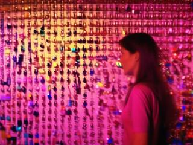
The home screen is a world map, and it starts blank. Every finished campaign puts a pin in it: the size of the pinhead shows how many parties it had, its colour shows the theme, and an outline or symbol on it marks a mutator. Over time the pins crowd together until the map disappears under them.
The map is also where new campaigns are set up and generated, so it's an endless supply of them. And every pin opens its campaign again: the list behind the pins is a record of seeded campaigns you can replay as flashbacks (see Game modes). It's a memento of what you did, not a score.
04 · Practical game flow
Sized to the evening
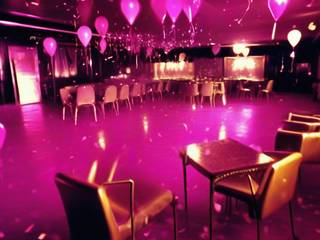
Open the map, set up a campaign (length, theme, maybe a mutator), take your loadout and go in. Three parties make a short session, twelve an extra-long one, and you decide which before you start.
A campaign waits between parties if you stop, and the game saves to one permanent file between campaigns, so the map and its pins are always there when you come back.
Game modes
The campaign is the game: a generated string of parties, sized by you.
Length
Parties
On the map
Small
3
The smallest pinhead
Normal
6
A medium pinhead
Big
9
A large pinhead
Extra long
12
The biggest pinhead, and the wildest final party
Flashbacks replay a finished campaign from its pin, with the same seed, as a memory that's grown in the telling: a vignette and film grain, deeper sound, and explosions and particle effects three times as bombastic. It's a small New Game+, a way to revisit a favourite run with everything exaggerated.
Features and mechanics
The heart of it
Witnesses and the phone
Every guest sees in a cone in the direction they face. Take someone out in front of a witness, or let a guest stumble on a body, and the game's one real threat begins: the witness doesn't fight, they run for a phone. A phone icon over their head shows where they're headed, and if they get there, the police are coming.
The police come in to arrest whoever was reported, and you can try to get away: sprint on your stamina, duck through a shortcut (it closes behind you and stays closed for a long while), change into a disguise. But every call brings a more persistent police response than the last, until outrunning them is close to impossible. The best escape is never being reported at all.
Bodies are evidence. A found body gets a siren over it and frightens everyone who sees it, until medics arrive to cover it with a body bag. Before that happens you can carry it out of sight or drop it in a dumpster. Some guests are harder than others: bouncers shove you away if you come at them from the front, and a plain-clothes agent will run you down unless you get behind them.
Getting caught ends that party where it stands. The guests still on the list get away, and the campaign moves on to the next venue. Nothing is reloaded; the record keeps the night as it went.
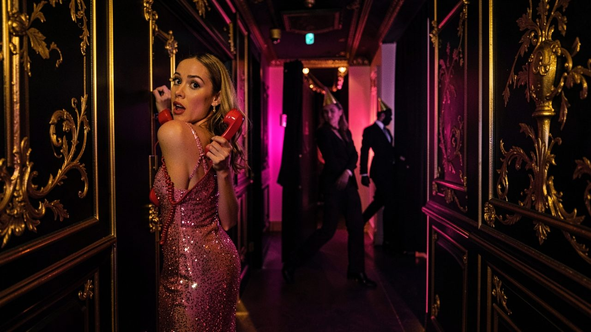
"Witnesses don't fight. They run for the nearest phone, and each call brings the police back more persistent than before."
A loadout from a random offer
Two weapons, two stacks
Before each party you're offered four weapons and four item stacks, drawn at random from a much bigger pool, and you take two of each. Every party deals a different offer, so every run asks for a different plan, and the whole pool is in play from the first campaign: nothing is held back to be unlocked later.
Inside, weapons and items are plentiful. Swap what you carry for what you find; whatever you put down stays on the floor, so you can come back and swap again. Several drops on one tile stack up, and the last one dropped is the first one picked up. You can carry up to four item stacks at once.
One deliberate contrivance: guests ignore weapons lying on the floor. Pickup spots sit on the routes people walk all night, and a crowd that panicked at every knife on a table would leave you nothing to work with.
One weapon system
Every weapon is a set of numbers
A weapon is a simple hit shape (a ray, a rectangle or a circle) with an outcome: it knocks a guest out, kills them and leaves a body, or obliterates them, leaving only a stain and no body for anyone to find. Around that, every weapon has the same parameters: swing time and recovery, reach, damage against walls and props, how far its sound and light carry, and how concealable it is, meaning how close you can get to a guest before they notice it and panic.
Weapons are hidden when you're not using them, but the least concealable one you carry decides how close you can stand. Firearms add projectile speed, rate of fire, spread, pellets per shot and an ammo count, with no reloads: when it's empty you throw it away, as in Hotline Miami. They're rare, loud, bright and hard to hide, so they're the risky choice in a stealth game.
Weapon
What it does
The catch
Knife
An instant kill, one target at a time
Slow work on a crowd
Baton
Knocks a guest out; a second hit finishes them
Two hits per guest, one at a time
Katana
Kills everyone in its sweep at once
A long blade is hard to hide
Sledgehammer
Obliterates a guest into a stain and breaks walls
Slow and loud
9mm pistol
A ranged shot, and easy to conceal
Very loud
Silenced pistol
A much quieter ranged shot
The long silencer is harder to hide
Shotgun
Several targets with one shot
Absurdly loud, and nearly impossible to hide
Less waiting, more noise
Tools that do a trap's job
Party Hard's traps meant waiting: stand at a trigger and hope someone walks into range. Venues here still have them, each with limited uses: a fan-blade box to push someone into, a stack of logs to roll down on someone, drinks to poison, contraptions that go off on a timer, when someone walks close, instantly over an area, or again and again. Some leave a body; some leave no trace.
But the trap's power mostly travels with you now, in items: a smoke bomb that blinds a room, a pizza box that draws a crowd to one spot, a stun bomb that knocks out a group before anyone can call, a time bomb, a disguise for shaking off the police, running shoes for outrunning them. A sparse venue with no traps never turns into stabbing a hundred guests one by one.
The price is attention. Items are much more likely to make noise and light than a knife is, and both draw people in. The faster way is never the quieter one.
Floors, supports and collapse
Buildings that can come down
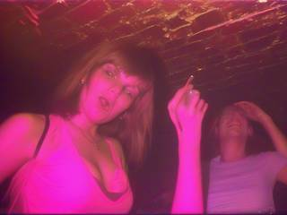
A venue is a building of one or more floors, linked by stairs and ladders, standing on a base plate of open ground. Walls and props have hit points, and every floor rests on supports. Break the supports under a section and everything above it, floors and walls alike, comes down, much as in X-COM: Apocalypse.
That opens routes nobody planned: a hole in a wall, a floor dropped onto the room below. But destruction is rare and usually unwise. Only explosives, certain contraptions and slow weapons like the sledgehammer can manage it, and every broken wall destroys traps and opens sight lines that used to give you privacy.
Routines and random events
A party that runs itself
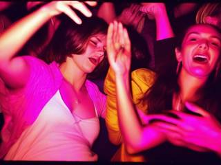
Guests, staff and security each follow their own network of waypoints: go here and face left or right, go here and pause for one, five or ten seconds, go here and sleep for thirty seconds if the spot is free (and if not, pause and move on). Some patrol, some roam, some stay put and dance, and some doze off where they stand. A body or a commotion changes what they do next.
Then the night throws in surprises:
More guests arrive, one to nine at a time.
A bear wanders in and eats someone at random.
A UFO lands and abducts a guest, and nobody bats an eye.
A pizza courier drops off a box, and a crowd flocks to it.
An engineer turns up and hands out an item.
Characters from parts
An operative of your own
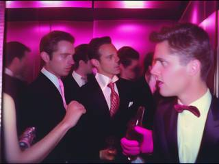
Party Hard came with a fixed roster: a ninja who turns invisible by standing still, a cop who can carry bodies without raising suspicion, a chainsaw wielder who mows through a crowd in short bursts, a killer who knocks people out first. Each was hard-coded, so new ones were hard to make.
Here those tricks become parts. You build your operative in a simple character creator: any outfit, your own colours, one passive trait and one active ability on a cooldown, chosen from a pool that includes the old roster's tricks. A new character is a new combination, and a new trait or ability works for every combination at once. The operative is drawn from the same sprite pool as the guests, which is exactly why you blend in.
A recipe, not a level
Venues from a generator
Party Hard drew its walls freehand on a pixel canvas, which made levels hard to generate, made destruction impractical and left walls overlapping. Here a venue is assembled from 16-pixel tiles by a short set of rules, the way a roguelike builds a dungeon, but as buildings on open ground rather than caves underground:
A base plate of ground, with patches of water that nobody can cross, but that never cut anyone off from the rest of the venue.
Buildings made of rectangles, whose edge tiles may become doors (closed and blocking sight unless someone is near), openings (free passage and sight) or windows (see through, can't pass).
Furniture and rugs along the walls, with the middle of a room left clear unless it's a big one, and never blocking a passage.
Walk-through decorations chosen for indoors or outdoors, with a very rare chance of an indoor object turning up outside.
Pickup spots for weapons and items, guests in clusters with random facings plus a few stragglers, the start and exit, and spots where the police, medics, maintenance and new arrivals come in.
Content as data
Built to grow
Walls, floors, props and characters all share one 16×16 standard, which opens up the huge library of existing 16×16 asset packs. Each party theme is a set of floor, ground, wall, door and decoration sprites plus its own crowd, and anything not tied to a theme is shared by all of them.
Weapons, items, traps and themes are all data. Anything added goes into the pool the next time a campaign is generated, and a new theme brings a new pin colour to the map. If something is removed, the generator simply works with what's left, so a save never breaks over missing content.
Trivia
Before the design turned toward a covert operative, its default character had a far more relatable motive: it's three in the morning, a party nearby is too loud to sleep through, so he goes over to shut it down. "Obviously not something to act out in real life," the notes add, "but definitely something that is a relatable situation."
The design notes describe what's left of an obliterated guest as a stain "with tiny meat kibble". At sixteen pixels, that's about four red dots.
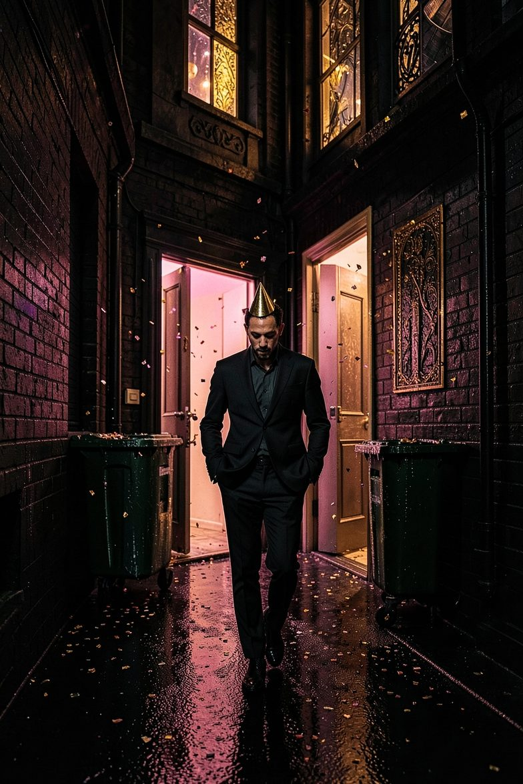
You are not on the list
Guest List Zero: Stealth Party Takedown
You are cordially not invited. Dress code: whatever you like, in your colours. Plus-one: two weapons and two stacks of something useful, chosen at the door.
Tonight the crew has the whole building: three floors, a bouncer on every stair, a dance floor nobody can see across, and a phone on every wall. Mingle. Wait for the song to change. Stay out of sight.